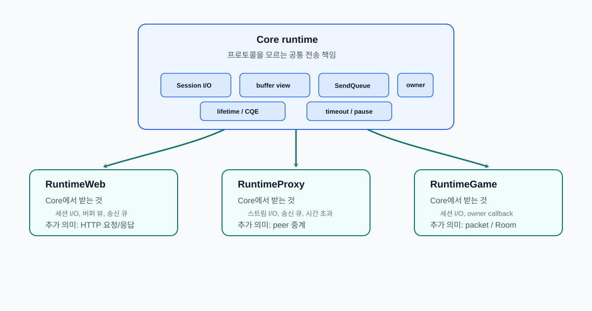

선택 모듈로 확장한 결과
1 선택 모듈로 확장한 결과
최종 구조에서 Core 런타임은 특정 서버 제품이 아니라 프로토콜에 종속되지 않는 전송 계층입니다. Core는 소켓 연결 수락, 수신/송신, 제공 버퍼, 송신 큐, 시간 초과, 수명주기, owner ring 같은 공통 I/O 책임을 맡습니다. HTTP 요청 해석, 프록시 라우팅, 게임 패킷과 Room 실행 모델은 Core 밖 선택 모듈이 담당합니다.

| 모듈 | Core에서 받는 것 | 모듈이 추가하는 의미 | Core에 넣지 않은 것 |
|---|---|---|---|
RuntimeWeb |
세션 I/O, 제공 버퍼 뷰, 송신 큐 | HttpSession, HTTP 파서, Router, 응답 생성 |
라우팅 정책, 인증, 파일 정책 |
RuntimeProxy |
스트림 I/O, 송신 큐, 시간 초과 | downstream/upstream 중계 | 프록시 라우팅 정책, peer별 종료 정책 |
RuntimeGame |
세션 I/O, owner callback, 송신 큐 | PacketSession, PacketBuilder, Room, RoomManager |
전투, 던전, DB, 인증 같은 게임 도메인 |
2 모듈별 검증
2.1 RuntimeWeb
RuntimeWeb은 Core Session::OnRecv()로 올라온 바이트를 HTTP/1.1 요청으로 해석합니다. 요청 헤더와 본문을 파싱하고, Router를 통해 handler를 찾은 뒤, 응답을 Core 송신 큐로 넘깁니다.
| 검증 항목 | 확인한 것 |
|---|---|
| HTTP 파서와 요청 수명주기 | TCP 스트림을 HTTP 요청 단위로 해석 |
| Router / RadixTree | method, 정적 경로, parameter, wildcard route 분리 |
| 파일/스트리밍 응답 | 큰 본문을 앱 메모리에 한 번에 누적하지 않음 |
| timeout/backpressure 연결 | HTTP 의미의 요청 시간 초과와 출력 흐름 제어를 Core 경로에 연결 |
2.2 RuntimeProxy
RuntimeProxy는 downstream 세션과 upstream 세션을 중계 경로로 묶습니다. HTTP 요청/응답 객체를 만들지 않고, 한쪽 peer에서 받은 바이트를 반대편 peer의 송신 큐로 전달합니다.
| 검증 항목 | 확인한 것 |
|---|---|
| downstream/upstream 중계 | 두 TCP 세션 사이의 바이트 전달 |
| 논블로킹 연결기 | upstream 연결 시간 초과와 실패 처리 |
| TLS/SNI 라우팅 | TLS 종료와 라우팅 선택을 Proxy 경계에 격리 |
| 느린 peer 처리 | write pressure를 반대편 recv pause/resume으로 전파 |
2.3 RuntimeGame
RuntimeGame은 게임 도메인 전체가 아니라 바이너리 패킷 프레이밍과 Room 실행 모델을 제공하고, PacketSession은 [size:uint16][msgId:uint16][payload] 형식의 패킷 경계를 복원 및 완전한 패킷이 만들어졌을 때만 게임 핸들러로 넘깁니다.
| 검증 항목 | 확인한 것 |
|---|---|
PacketSession |
TCP 스트림 위 바이너리 패킷 경계 복원 |
PacketBuilder |
페이로드 앞에 패킷 헤더를 붙여 Core 송신 큐로 전달 |
Room / JobQueue |
Room 상태 변경을 직렬 실행하고 Room 간 분산 허용 |
RoomManager / PlayerRegistry |
플레이어-Room 관계와 Room 수명주기 관리 |
3 결론
Web, Proxy, Game을 각각 만들었다는 데 있지 않고, 서로 다른 프로토콜 모듈을 같은 Core 위에 올려도 내부의 수명, 버퍼, 송신 순서, 흐름 제어 문제는 바뀌지 않았습니다.
처음에는 서버의 연결 수락, 수신, 송신, 연결 종료 흐름을 직접 구현하는 문제로 시작했습니다. 하지만 구현이 진행될수록 핵심은 빠르게 I/O를 제출하는 코드가 아니라, 완료 통지가 늦게 도착하고, 버퍼 수명이 엇갈리고, 연결 종료 중 새 작업이 들어오고, 여러 워커가 같은 세션이나 Room을 건드리는 상황을 끝까지 안전하게 마무리하는 데 있다는 점이 드러났습니다.
그래서 최종 구조에서 Core는 프로토콜을 모르는 상태로 남겨 두었습니다. HTTP 요청, 프록시 라우팅, 게임 패킷의 의미는 각 모듈이 해석하고, Core는 세션 I/O 상태를 owner ring에서 직렬화합니다. 제출된 I/O는 CQE가 돌아올 때까지 생존하고, 연결 종료는 즉시 해제가 아니라 비우기 이후에 확정되는 상태 전환으로 처리됩니다. 송신 큐 역시 무제한 버퍼가 아니라 watermark, 수신 일시 정지, 연결 종료 정책을 판단하는 기준으로 사용됩니다.
결과적으로 이 구현은 단순히 빠른 서버를 만드는 작업이 아닌 완료 통지 기반 전송 런타임을 세우는 작업에 가까웠습니다. Core는 수명, 버퍼, 흐름, 동시성의 규칙을 고정하고, Web/Proxy/Game은 그 위에서 각자 프로토콜을 해석합니다. 이 경계가 유지되기 때문에 같은 런타임을 HTTP 서버, , 패킷 게임 서버로 확장할 수 있었습니다.